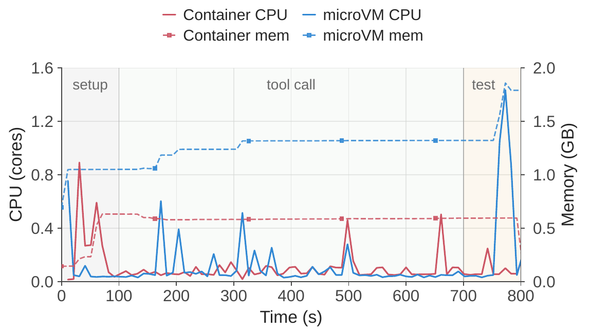
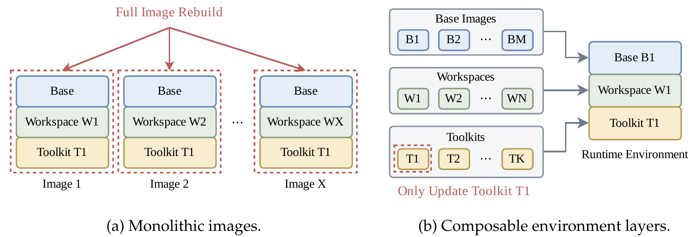
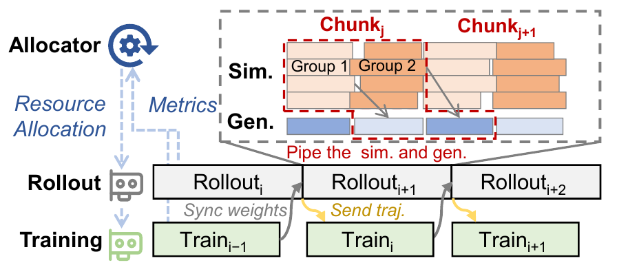
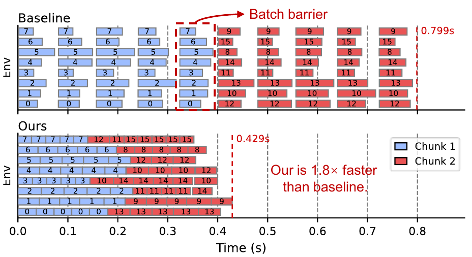

核心思想
DSec · 状态留下，资源按需用
拆开管理环境、资源与执行状态：镜像层可复用，CPU / 内存按需占用，Rollout 状态在 GPU 训练作业被抢占后仍能保留并重连。
EBRL · 让可执行的工作持续重叠
让仿真、动作生成与训练异步推进，并动态分配 CPU 核、GPU 逻辑 SM 配额和批大小，减少环境间等待与资源失衡。
Idea 与成员贡献
三个方向分别处理状态保存、计算布局和环境复用，均为待验证设想。
让有状态仿真环境支持暂停与恢复
- 怎么做
- 在一致性边界保存动态物理状态、随机状态与 Rollout 进度；资源恢复后从断点继续，避免重新初始化并重跑轨迹。
- 先验证
- 列出必须保存的内部状态，检验恢复前后的一致性，并比较快照成本与重跑成本。
让 GPU 调度感知渲染与传输成本
- 怎么做
- 联合考虑 RT 渲染、SM、显存与跨设备传输，动态选择仿真、推理、训练的同卡共享或跨卡拆分。
- 先验证
- 在渲染较重与较轻的任务上，对比不同布局的吞吐、渲染干扰与搬运开销。
EBRL 已测试 RTX + A100；新意在动态布局。感知 RT 需求不等于能直接切分 RT Core。
复用场景资产，隔离每个环境的动态状态
- 怎么做
- 共享静态场景资产和可复用的初始化产物，为各环境保留独立动态状态；按任务切换模式缓存或预加载。
- 先验证
- 明确可共享对象及版本失效规则，再与普通镜像缓存、单进程复用比较加载与初始化时间。
补充图与数据
展开论文观察、性能结果与 4 张机制图
DSec 观察：约 90% 的沙盒平均 CPU 使用量不超过申请量的 5%，但状态仍需驻留。Base、Workspace、Toolkit 独立组合，镜像数据从 3FS 按需加载，配合内存共享、回收与 CPU 服务质量控制。




EBRL 机制：跨迭代重叠采集与训练，跨环境组重叠仿真与动作生成；Action Chunk 内各环境独立推进，等待新动作时释放 CPU，并优先调度预计较慢的步骤。结合离线 Profile 与运行时反馈调整资源，默认以 MPS 共享执行。




论文结果：所测配置端到端轨迹吞吐为基线的 1.30–3.47 倍。下一段动作仍依赖新观测和模型生成，不能跳过因果依赖。
来源：Jialiang Huang et al., DeepSeek Elastic Compute (DSec): A Sandbox Infrastructure for Effective Agentic Training at Scale；Liang Mi et al., EBRL: Asynchronous Embodied RL by Multi-Grained Resource Management。均依据所提供论文版本第 4–6 节（EBRL 另含第 3 节）。
来源与说明
《具身 RL 与沙盒技术：两篇论文的核心思想与三个研究方向》（2026-11-04，TeX、PDF 与配套插图）。网页提炼核心思想，验证步骤据讨论整理；成员归属结合原记录与补充确认。引用图版权归原作者。
查看来源与使用说明 →